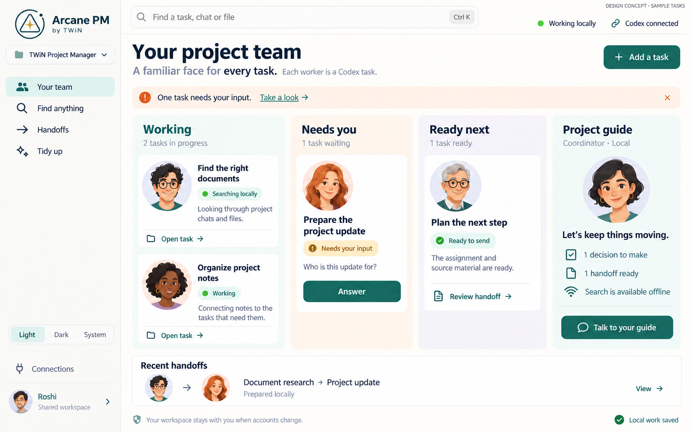
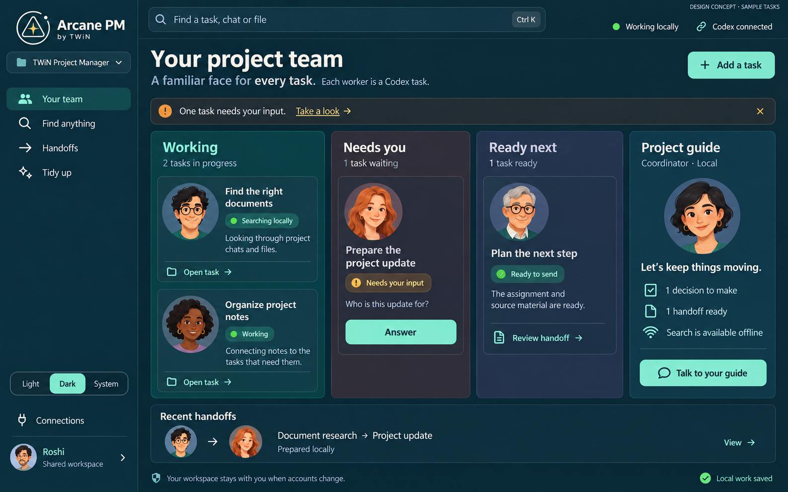

In development
A familiar face for every task.
Bring your Codex projects, conversations, and working files together. Find what matters, pass work forward, and keep preparing between sessions.


In development
Bring your Codex projects, conversations, and working files together. Find what matters, pass work forward, and keep preparing between sessions.

